Element B
Documentation & Analysis of Prior Solution Attempts
I. Introduction
Problem Statement
In the United States, 44.13% of amateur golfers have 14.9+ handicaps (not including players who don’t keep score) and experience difficulties when reading the slopes of greens.1 These difficulties arise from novice golfers lacking experience with reading breaks and from courses having different types of cuts for the greens. This problem leaves high-handicap golfers unsatisfied with themselves, as they consistently average four to five three-putts per 18 holes and end up shooting high scores.
Several other existing solutions on the market were heavily researched with the intention of determining how useful the products are for this problem. Additionally, multiple different patents of similar issues were found and analyzed, leading to a better understanding and comprehension of prior solution attempts.
II. Current Solutions
The current solutions section reviews and analyzes several of the existing green reading tools that are available to all golfers. By examining the works and pros/cons of each product, the section provides the understanding of where solutions fall short & opportunities of improvement.
1. Sure Putt Pro Golf Green Reader
The Sure Putt golf aid is an extremely compact version of a bubble level. The putting aid is only half an inch thick with a diameter of two inches. Not to mention, incorporating aluminum as the material of the chip decreases the likelihood of the paint fading or chipping. Additionally, the markings on the green reader (which tells the golfer where the ball moves) are all machine-engraved rather than painted on. Due to the usage of aluminum, the aid is heavy enough to lay flat on the ground, meaning it can’t be slanted, which would provide inaccurate readings.2
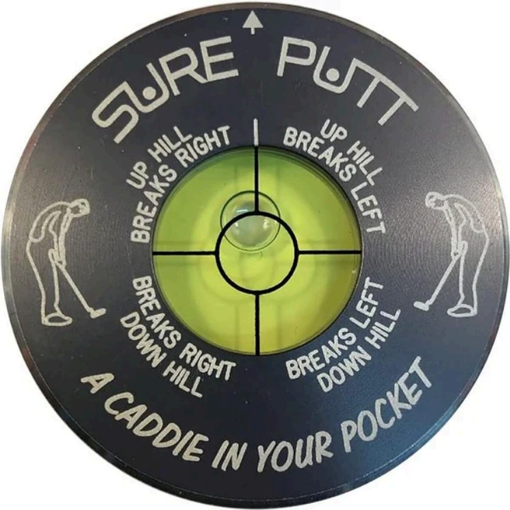
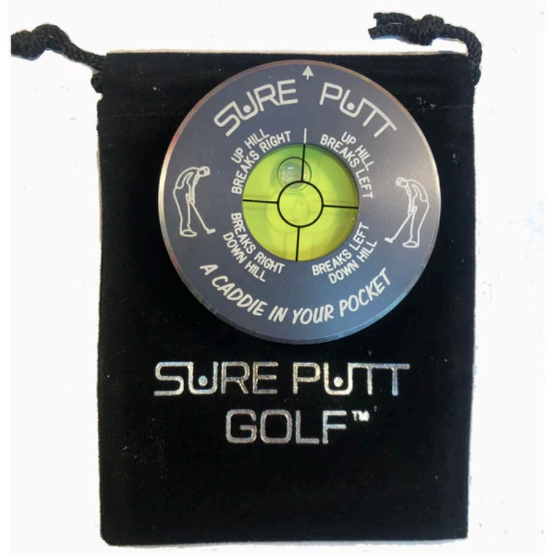
Pros
- Extremely durable and compact
- Engraved writing rather than painted
- Includes carry bag
- Good weight/feel to the aid
- It can easily fit in the pockets of golfers
Cons
- Cost is relatively high given the size ($40 w/o tax)
- No electronics, purely analog
- Easy to lose given size
- Requires the golfer's interpretation
- Doesn’t recommend aiming automatically
2. EEZ-READ Green Reader
The EEZ-READ (short for easy read) is a portable bubble level that provides readings for green contours. Gives golfers the ability to read breaks on putts by placing the reader halfway between the ball and the hole. Overall, it is very compact and lightweight, as seen in Figure 2.3 below. Also incorporates a stainless steel disc, which offers sturdiness to the general design. Stated that the reader strictly works best during the moments where the distance between the ball and the hole is less than 20 feet.5
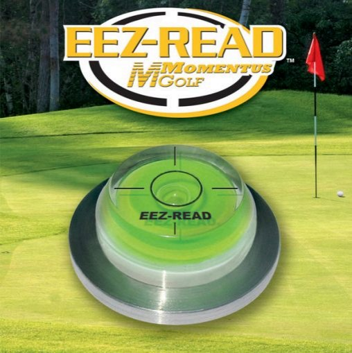
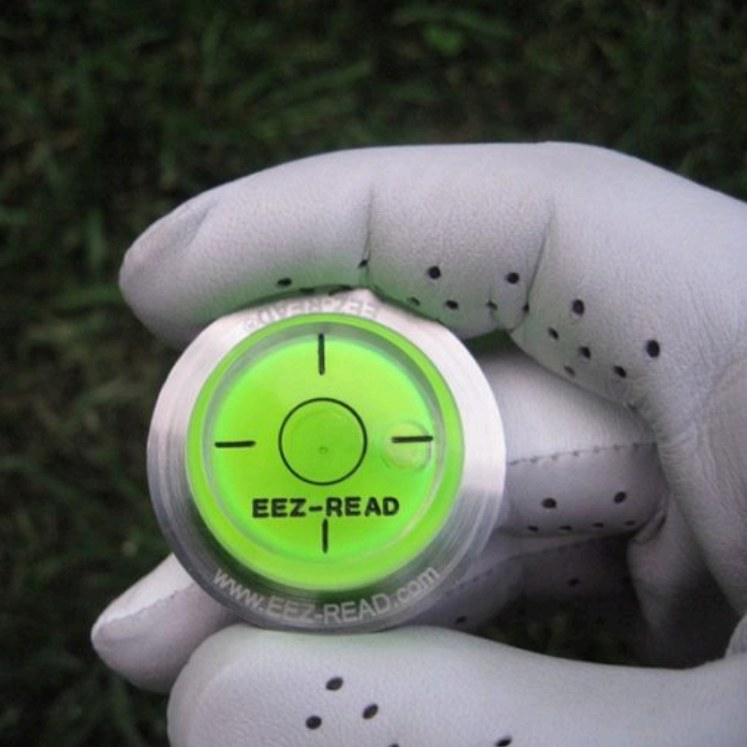
Pros
- Cost is slightly affordable, being ($20 w/o tax)
- Very portable and pocket-friendly
- Stainless steel is durable and high quality
- A bubble level provides quick readings
Cons
- Not very precise outside 20 20-foot range
- Doesn’t have any markings on the aid
- Completely requires the golfer's interpretation of the bubble
- Also easy to forget and misplace
- Zero usage of technology or electronics
3. BreakMaster Digital Green Reader
This green reader is a small portable digital level that is used to find the slope of greens. It then indicates the direction of the break, and then the display shows the specific amount in degrees. Particularly used by being placed onto the putting green and then calibrated through the use of the system inside the device. Overall is a detailed electronic device that can easily be used during rounds of golf or practicing, but is not allowed usage in tournament play.8
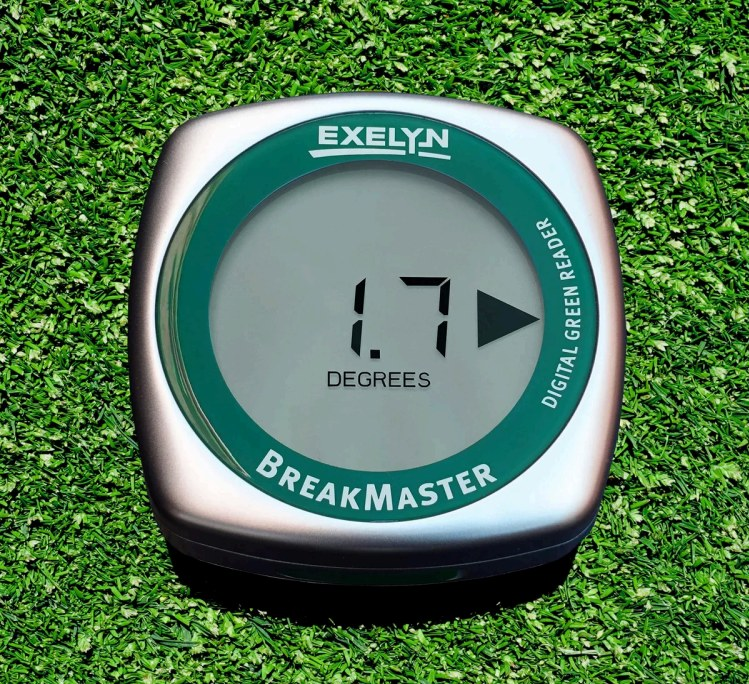
Pros
- Accurate slope reading
- Analyzes both direction and degree
- Easy to use
- Lightweight and portable
- Durable
Cons
- Expensive ($150)
- It may be hard for new users to use
- Not legal in tournament play
4. Mosey Golf Green Reader
This simple, easy-to-use device is suitable for golfers of all levels. It includes a detachable magnetic ball marker on the back of the level aid, an iron storage box, and a portable design. To use the device, it must be placed on the green, leveled, and from there it will read the green's slope and profile.10
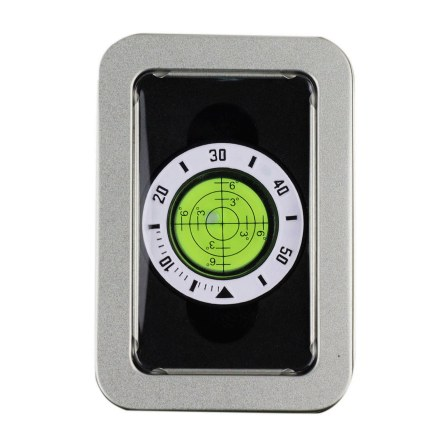
Pros
- Cheap, only costing 11 dollars
- Pocket-sized, making it easy to carry around
- Lightweight
- Simple and very straightforward use
- Can be used as a ball marker
Cons
- Low precision, giving an idea of direction without the use of accurate technology
- Would be ineffective against irregular greens
- Not tournament legal
- Requires interpretation without actually telling the golfer where to put.
5. JEK Digital Level
This device acts as an ordinary bubble level, except it takes an ordinary slope measurement and converts it to percent slope. This allows golfers who use AimPoint to accurately predict the percent slope of a putting green.12
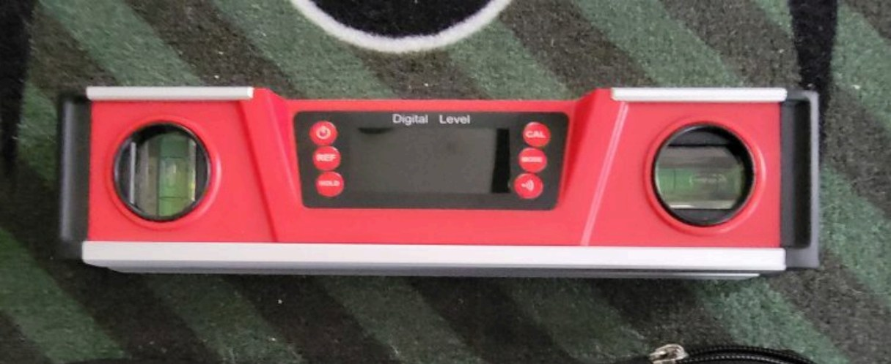
Pros
- Provides accurate readings
- Compact in size
- Ease of use
- Good quality
Cons
- No assistance on how to actually aim
- Not tournament legal
- Doesn’t take distance into account
6. Tour Read App
This app is downloadable on any IOS or Android phone. This app is able to walk a golfer through the putting process and uses the phone to calculate slope in the green. After it calculates the slope, the app then walks the golfer through the process of setting up, aiming, and hitting the putt.14
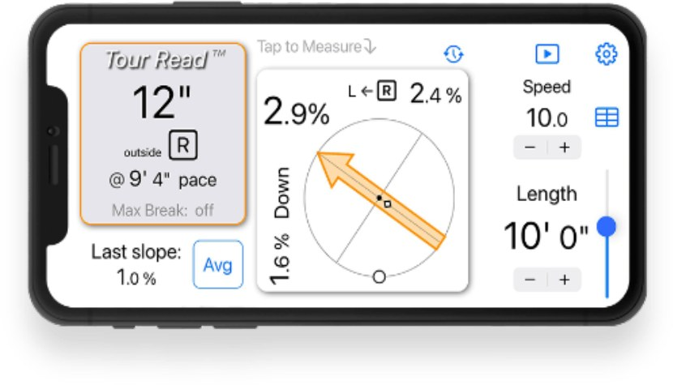
Pros
- Very accessible as it’s used on a phone
- Provides aid beyond just a slope reading
- Ease of use
- Gives a large plethora of data
Cons
- Reading may be slightly inaccurate
- Expensive and requires a membership to use the app
- Not tournament legal
- Depends on the type of phone
III. Patent Research
The patent research section explores the different patents that past inventors have approached through the correlation to green reading technology. The patents provide a development to a more advanced reliable solution by reviewing the mechanisms, and technological weaknesses.
Patent 1: Device for measuring inclination of green in golf course
Patent Summary
A measuring system that captures the distances of the surfaces on putting greens. Uses multiple different aspects of an angular orientation, then uses a rotation member to rely on gravity to rotate on the given shaft. The member is marked by measurement lines both horizontally and vertically, indicating the direction and magnitude of the inclination /slope. The interior portion of the device has two separate casings, one part supporting the ability to rotate and the other part including the graduations/lines used to judge measurement.
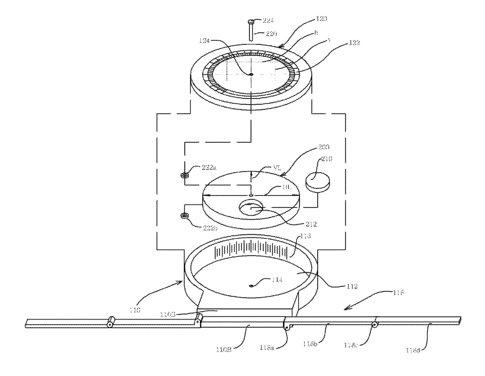
Patent Critique
This design has a clear mechanical layout that does not require any form of technology or power. Most components seem to be very cost-effective, thus keeping the device affordable. However, Figure 3.1 lacks simplicity as there are several different pieces for casings and parts. The rotation member has to be aligned perfectly for the measurements to be accurate. The design also isn’t very portable.
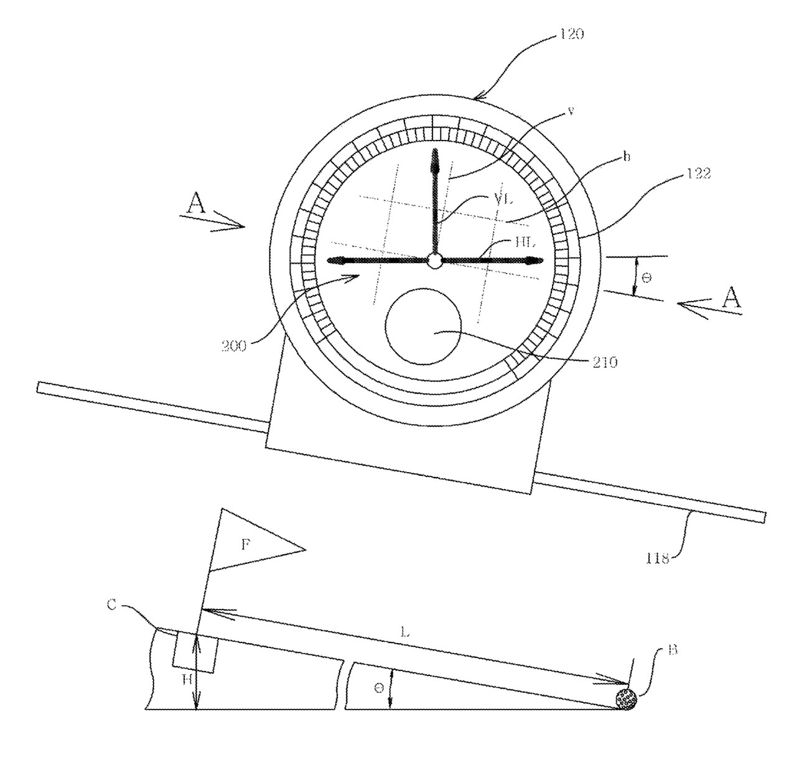
Patent Critique
This diagram offers an understanding of the mechanics of the system while at an angle. Allows a visualization of how the slope and magnitude are interpreted through the graphics of the flag and golf ball. Many of the weaknesses are derived from the potential friction of the environment, specifically when placed at an angle. Also, the interior rotation member may be vulnerable to dragging if the casing compresses over long periods of time.
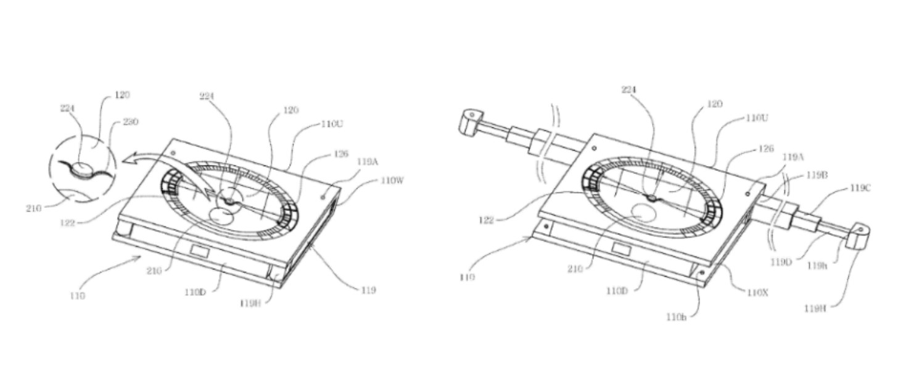
Patent Critique
The visual clearly shows the simplicity of reading the circular markings. The unfolded view makes it easy to quickly glance at the direction of the rotation member and interpret slope direction. Markings revolve around the circular device, allowing the measurement to be read from any angle. On the contrary, the degree markings are extremely small, resulting in the device being hard to read from afar. Potential opportunity for human error by causing the member to over-rotate if the device is not cared for properly.
Patent 2: Golf putting aid
Patent Summary
A full electronic powered putting aid which uses a leveling sensor to offer guidance for golfers looking for aim recommendations. Not only does it give the ability to read the slope at different locations, but it also indicates the ideal aim golfers need to predict the break. Several different components within the system, each having unique purposes. The display gives the visuals for slope angles and can also audibly announce the potential aim points for the golfer. Overall, the aid relies heavily on proper electronics and adaptations to putting distances, yet is much more advanced compared to traditional bubble-level designs.
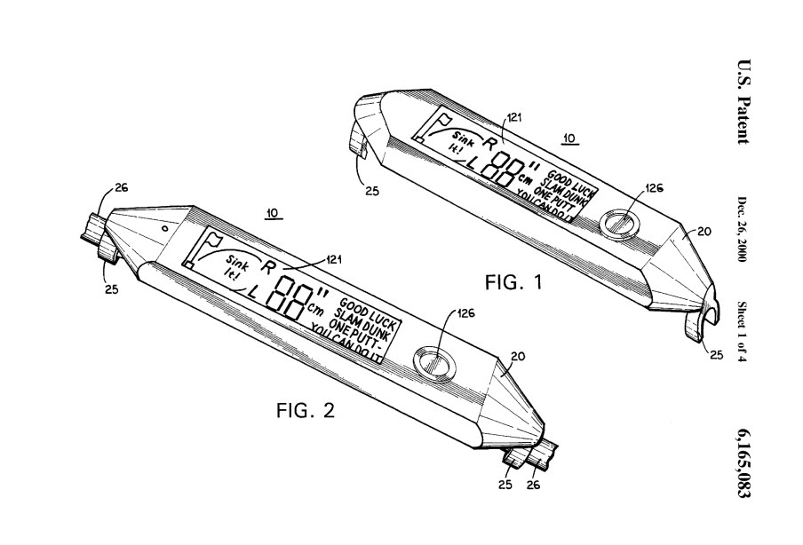
Patent Critique
The image above clearly shows the clip of design specifically on both ends of the aid. This allows for quick attachment to any form or type of shafts for putters. The integrated display is very clear and is simple for golfers. On the contrary, there is a high chance that the clip mechanism can become loose over time due to constant clipping and unclipping. Also, because of the high amount of electrical components within the system, the possibility arises for components to fail during rounds of golf.
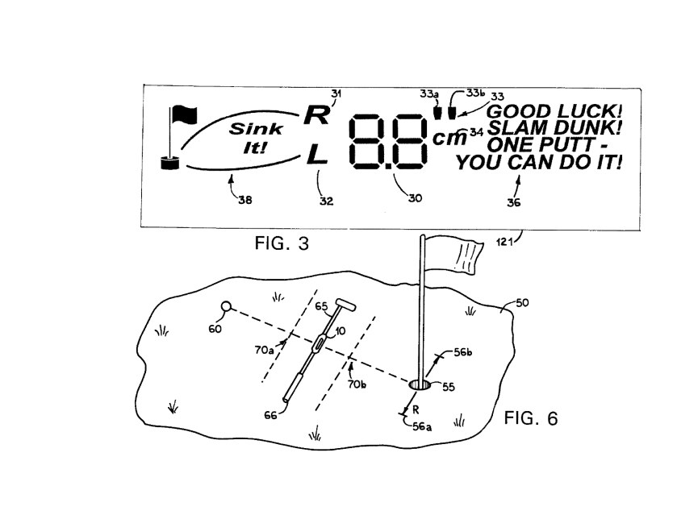
Patent Critique
The visual has multiple forms of data on the LCD screen. Some options consisted of units, slope measurements, and encouragement phrases. Figure 3.5 also highlights a real-life application, illustrating how the device interacts with the slope and provides a line for the putt. Weaknesses consist of the accessibility and visibility of the device. Accessibility specifically due to the aid strictly being attached to the putter and then placed on the ground. This results in the putter grip being wet while the greens are either wet from dew, weather, or even sprinklers. Additionally, visibility as the numeric display may be difficult to visualize from the glare of the sun.
Patent 3: Green reader device
Patent Summary
This is a design for a reader device to determine the correct putting direction based on the green's slope. The device uses a green viewing area and a bubble level on the body to help the reader analyze the green while making sure the device is level. It also has an adjustable pivot indicator that points toward the putting direction while properly taking into account the slope.
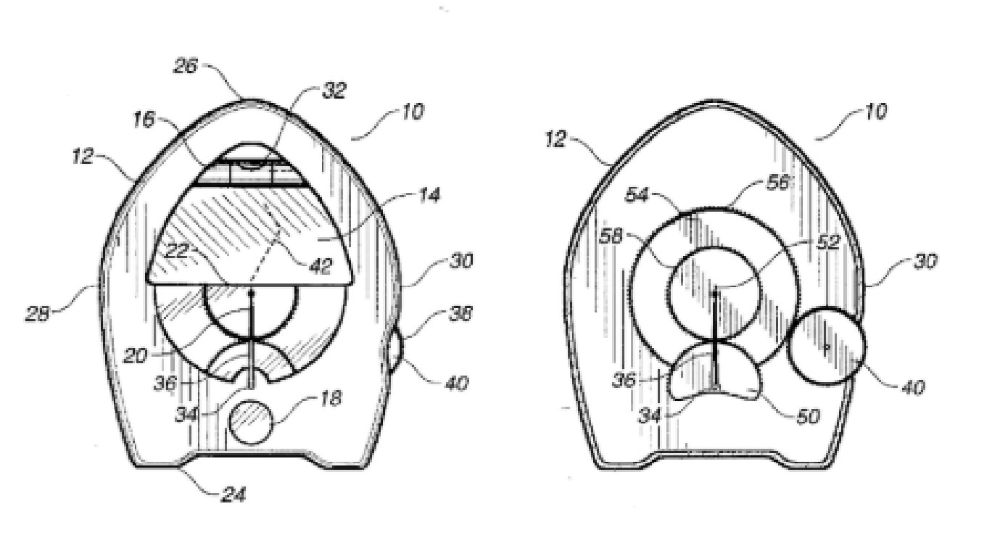
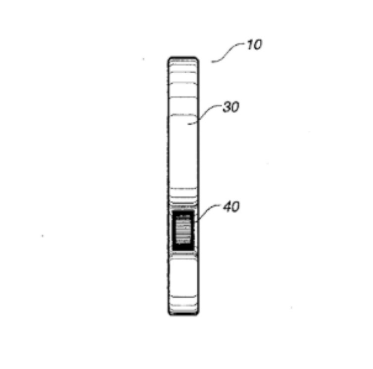
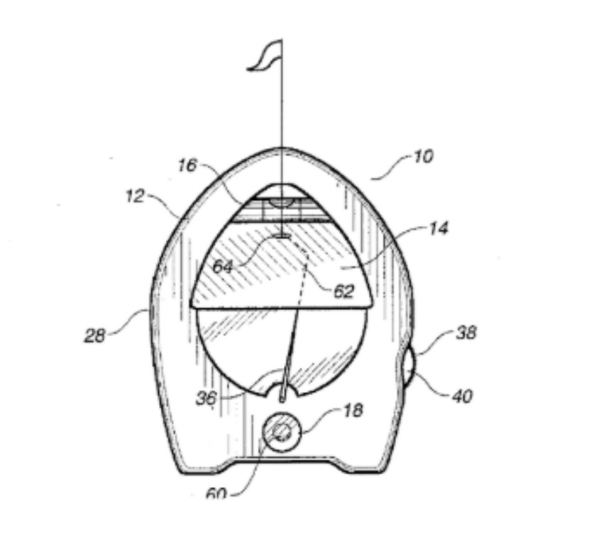
Patent Critique
The design is limited by its simplicity and lack of technology. Without using devices that can confirm its accuracy, the device is limited by the user's steadiness and judgment, leading to many inconsistencies. The device also does not address problems that could affect putts, such as green moisture and grain, thereby limiting its potential. What the device gained in compactness and affordability, it lost in accuracy and effectiveness. The design does have some pros, however, as it is lightweight and pretty simple in design and build. Therefore, it would be easy to create and sell on the market.
Patent 4: Golf green slope indicating device
Patent Summary
The patent is for a handheld golfer's sighting aid used to determine putting directions using the slope of the green. It is a box-shaped transparent device that is compact enough to fit in someone's pocket. Inside the device is a pointer to the lower end, which is weighted to act as a plumb bob. Another side has a vertical line and horizontal lines, with the pointer pivot axis lying at the intersection of the central vertical line and a lower horizontal line.
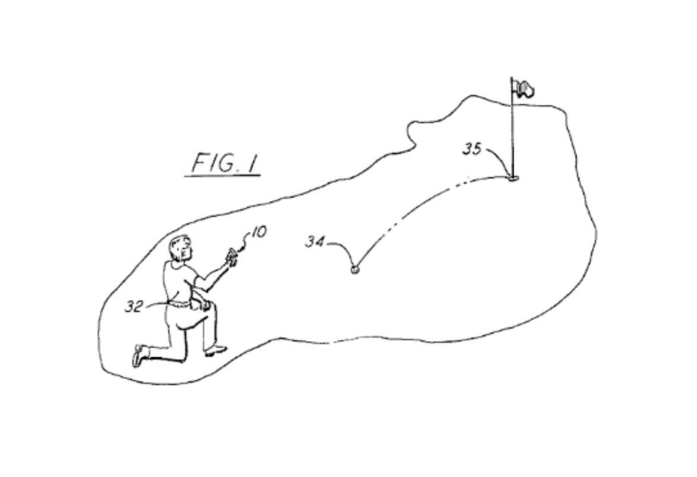
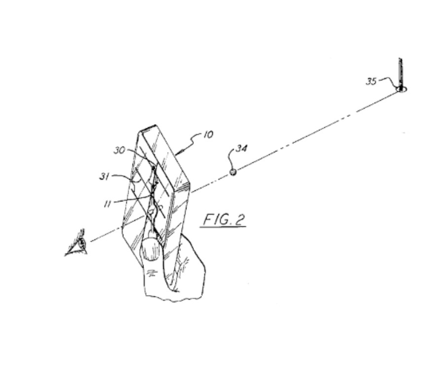
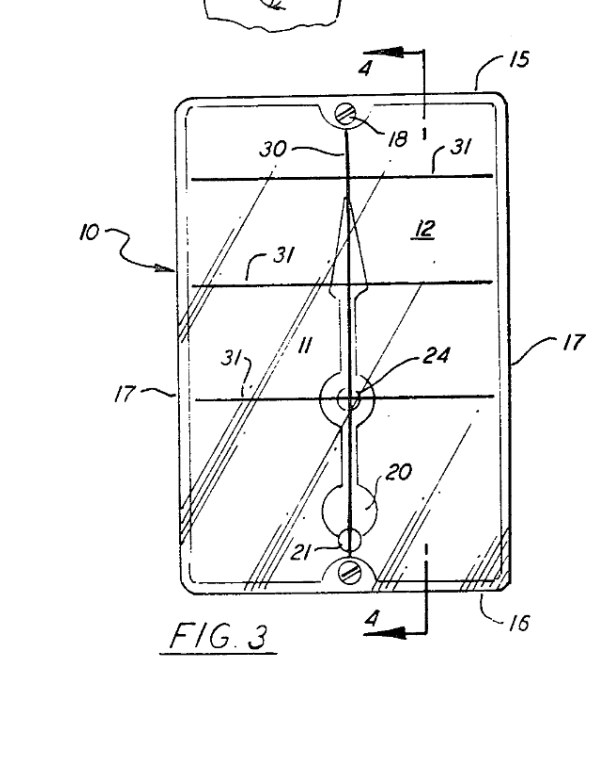
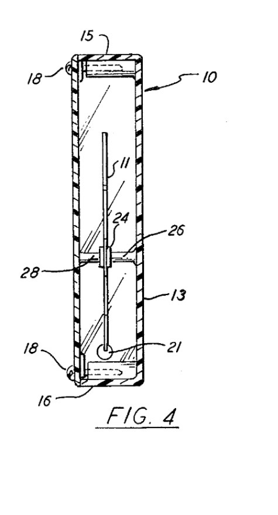
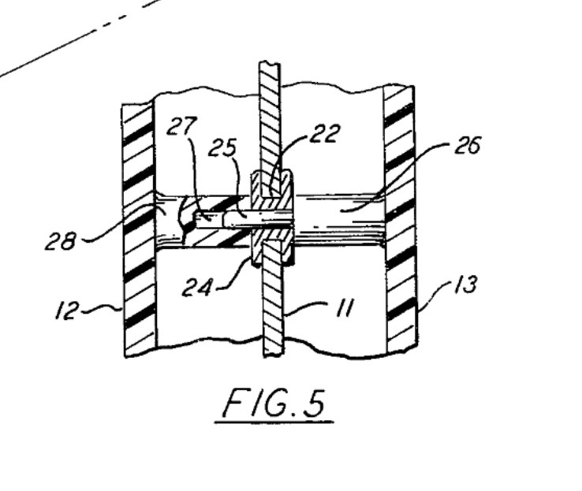
Patent Critique
The device is limited due to how basic it is, relying on gravity and visuals rather than technology or sensors. Without even a bubble level, the device is minimal in its effectiveness. The box itself requires a lot of work to set up and could end up failing due to user error. It also only measures slope direction without taking into account other putting factors, and would be awkward to use often, most likely slowing down play a drastic amount. However the detailed drawings portraying how simple it is to use and thoroughly detailing the product itself is a big positive.
Patent 5: Device for indicating slope of green on golf course
Patent Summary
A device that can be carried by a golfer during their putting routine to determine the slope between their ball and the hole on any given putt. It incorporates a bubble level with wheels and a shaft to be wheeled along the surface of the green. The bubble shifts depending on the amount of slope, lining up with the appropriate number to indicate the amount of slope/pitch in the putting surface.
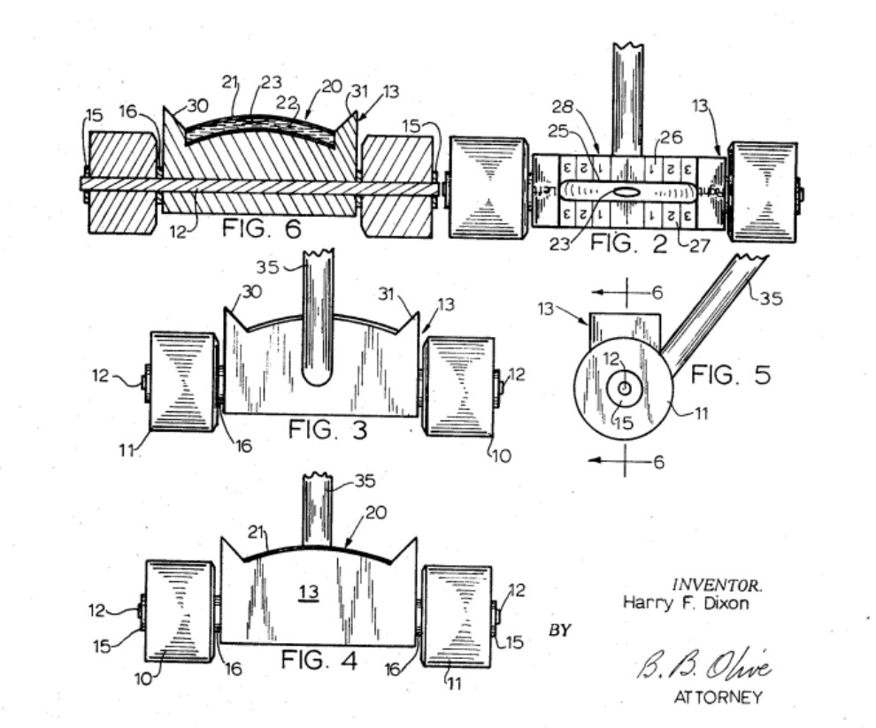
Patent Critique
These visuals showcase the main body of the device from all angles. It incorporates a close-up of the bubble level, showing each number that indicates to the golfer the amount of slope on a green. It also showcases the wheels and how they are attached, allowing the device to roll smoothly across the green, providing ease of use and accuracy.
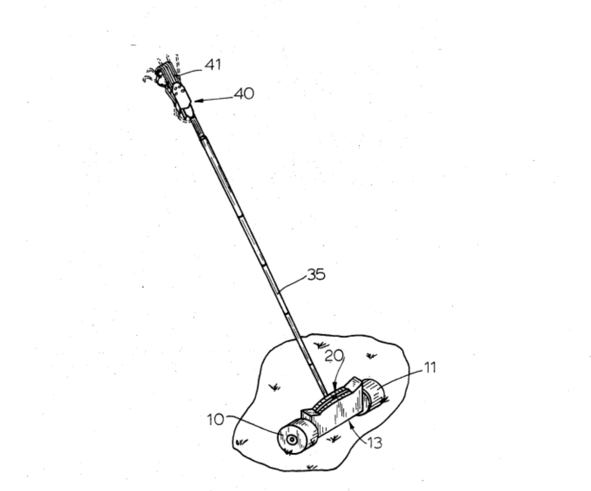
Patent Critique
This image shows how one would be able to use this device on a green. It showcases the handle piece, allowing a golfer to easily roll it along a putt line. This picture also showcases the positioning of the level. The level is pointed upward to allow the golfer to see the slope index while simultaneously rolling it along their putt line.
Patent 6: Golf green reader and putting aid
Patent Summary
This device allows a golfer to see topographical data in an easier-to-understand format. It takes in the distance between the device and the green while also gathering the angle of the green’s slope. After gathering such data, the device computes a topographic view of the putting green. It then displays an accurate putting aid to the golfer.
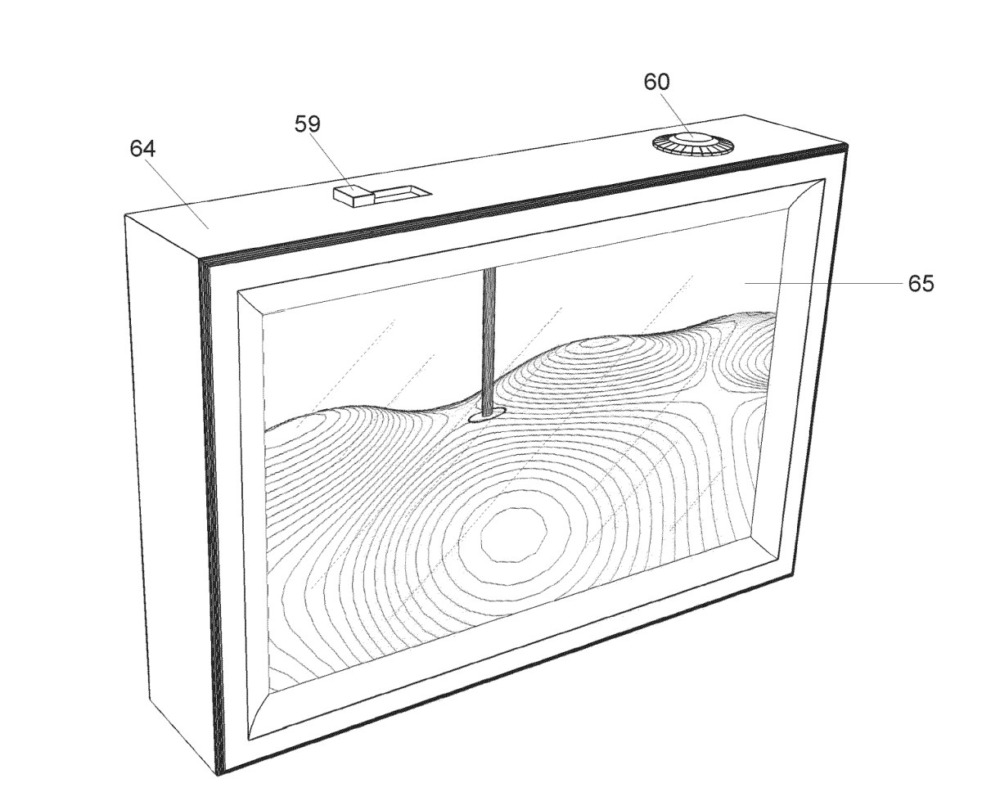
Patent Critique
This image showcases the device as a whole. This device contains both distance sensors and a tilt sensor to gather adequate data. From there, it processes this information and outputs it onto the display seen in the image above. This display is then used by a golfer to understand the topography of a putting surface and to correctly predict the line needed on a given putt.
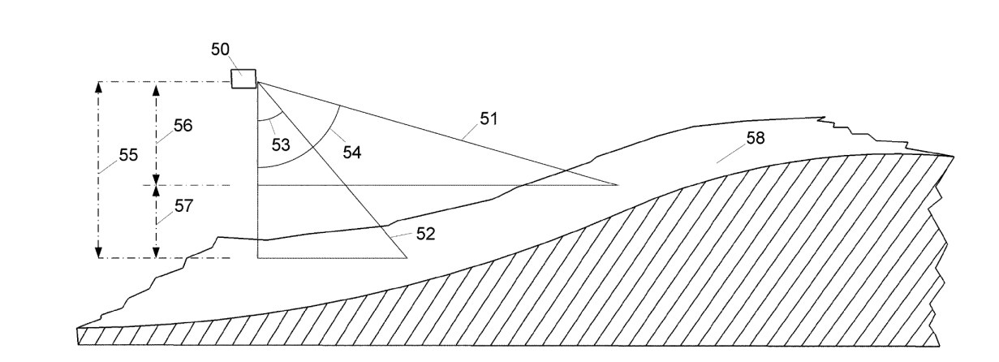
Patent Critique
This diagram shows the method for gathering topographical data. The device measures along the selected distance that needs to be measured. From there, it collects the data for the slope itself, using the angle of the pitch in the green. This is then the data that is displayed on the actual device itself.
IV. Solutions Matrix
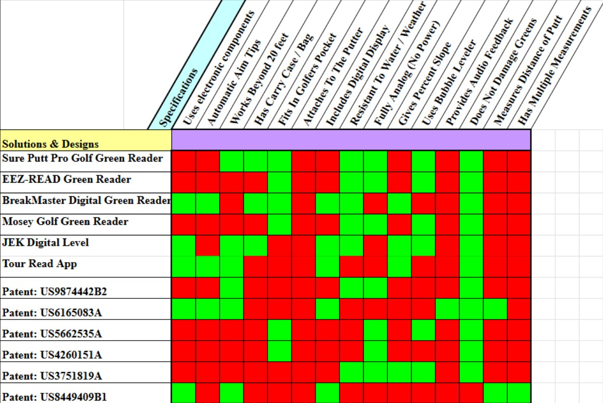
Matrix Analysis
In the realm of products, there has already been a large number of green reading solutions, all of which have differing methods of calculating the percent slope and providing advice to golfers. The Solutions Matrix in figure 2.4 shows the products analyzed, green meaning yes, it has that specification, and red meaning no, it does not. As seen in the matrix, many of these products share the most specifications in the following categories: does not damage the green, requires no power, and is weather resistant. A design for a similar future product must therefore contain these specifications in order to compete against existing products. On the other hand, not many of the tested products have the specifications of measuring distance, attaching to a putter, and measuring multiple different things. These are key notes to highlight as they could make a future product stand out above the rest.
V. Conclusion
The solutions listed above are among the most effective currently available on the given market. Current solutions, such as the EEZ-READ Green Reader and the Mosey Golf Green Reader, are either inexpensive and inaccurate or expensive and do not provide guidance on aiming. Overall, the solutions that were researched and analyzed all clearly indicate a requirement for a product solution that is not only reliable but also precise. In addition, the patents listed are for various putting aid components and include proper summaries and critiques of what is good and bad about each patent. These individual patents address both the benefits and limitations of inventors' approach to a golf green reading device. Furthermore, to analyze the effectiveness of each solution, an appropriate matrix of solutions was created, including products such as the Tour Read App and JEK Digital Level. The solutions matrix will be helpful throughout the rest of the project when figuring out new solutions and what components should be added to the final product. The specifications portion of the matrix is a key criteria to the element due to the specifications having a significant impact in the months to come. Specifically, as the criteria will separate a new solution from prior solutions and patents that have had issues in the past. This research was an essential step toward developing a solution to the green reading problem. Utilizing experts in engineering, these solutions can be further analyzed to create a solution to the green reading problem by analyzing past ideas already on the market.
-
Cunningham, Kevin. “Here’s How Your Handicap Index Stacks up against Golfers in the United States.” Golf, 9 Sept. 2020, golf.com/news/how-your-handicap-index-compares/. ↩
-
“Sure Putt Pro Golf Green Reader - Gunmetal.” Sureputtgolf.com, 18 Sept. 2024, sureputtgolf.com/products/sure-putt-pro-golf-green-reader-gunmetal/. Accessed 6 Dec. 2025. ↩
-
“Sure Putt Pro Golf Green Reader - Gunmetal.” Sureputtgolf.com, 18 Sept. 2024, sureputtgolf.com/products/sure-putt-pro-golf-green-reader-gunmetal/. Accessed 6 Dec. 2025. ↩
-
“Sure Putt Pro Golf Green Reader - Gunmetal.” Sureputtgolf.com, 18 Sept. 2024, sureputtgolf.com/products/sure-putt-pro-golf-green-reader-gunmetal/. Accessed 6 Dec. 2025. ↩
-
“EEZ-READ Green Reader – Momentus Sports.” Momentussports.com, 19 June 2017, www.momentussports.com/product/eez-read-green-reader/. Accessed 6 Dec. 2025. ↩
-
“EEZ-READ Green Reader – Momentus Sports.” Momentussports.com, 19 June 2017, www.momentussports.com/product/eez-read-green-reader/. Accessed 6 Dec. 2025. ↩
-
“EEZ-READ Green Reader – Momentus Sports.” Momentussports.com, 19 June 2017, www.momentussports.com/product/eez-read-green-reader/. Accessed 6 Dec. 2025. ↩
-
“Breakmaster Digital Green Reader.” BreakMaster, breakmaster.com/shop/ols/products/breakmaster-digital-green-reader. Accessed 7 Dec. 2025. ↩
-
“Breakmaster Digital Green Reader.” BreakMaster, breakmaster.com/shop/ols/products/breakmaster-digital-green-reader. Accessed 7 Dec. 2025. ↩
-
“Mosey Golf Green Reader with Iron Box Magnetic Ball Marker High Precision Level Aid Bubble Tool Golf Putting Training Accessories.” Walmart, www.walmart.com/ip/5198752463. Accessed 7 Dec. 2025. ↩
-
“Mosey Golf Green Reader with Iron Box Magnetic Ball Marker High Precision Level Aid Bubble Tool Golf Putting Training Accessories.” Walmart, www.walmart.com/ip/5198752463. Accessed 7 Dec. 2025. ↩
-
"Digital Green Reading." Old Duffer Golf, oldduffergolf.com/digital-green-reading/. ↩
-
"Digital Green Reading." Old Duffer Golf, oldduffergolf.com/digital-green-reading/. ↩
-
"Tour Read Golf - green reading system." MyGolfSpy Forum, 8 May 2025, forum.mygolfspy.com/topic/70106-tour-read-golf-green-reading-system/. ↩
-
"Ralph Bauer Tour Read Golf." Foresight Sports, 2025, golf.foresightsports.com/ralph-bauer-tour-read-golf. ↩
-
“US9874442B2 - Device for Measuring Inclination of Green in Golf Course - Google Patents.” Google.com, 27 Mar. 2014, patents.google.com/patent/US9874442B2/en. Accessed 5 Dec. 2025. ↩
-
“US9874442B2 - Device for Measuring Inclination of Green in Golf Course - Google Patents.” Google.com, 27 Mar. 2014, patents.google.com/patent/US9874442B2/en. Accessed 5 Dec. 2025. ↩
-
“US9874442B2 - Device for Measuring Inclination of Green in Golf Course - Google Patents.” Google.com, 27 Mar. 2014, patents.google.com/patent/US9874442B2/en. Accessed 6 Dec. 2025. ↩
-
“US6165083A - Golf Putting Aid - Google Patents.” Google.com, 22 Mar. 1999, patents.google.com/patent/US6165083A/en. Accessed 6 Dec. 2025. ↩
-
“US6165083A - Golf Putting Aid - Google Patents.” Google.com, 22 Mar. 1999, patents.google.com/patent/US6165083A/en. Accessed 6 Dec. 2025. ↩
-
“US5662535A - Green Reader Device.” Google Patents, Google, patents.google.com/patent/US5662535A/en. Accessed 7 Dec. 2025. ↩
-
“US5662535A - Green Reader Device.” Google Patents, Google, patents.google.com/patent/US5662535A/en. Accessed 7 Dec. 2025. ↩
-
“US5662535A - Green Reader Device.” Google Patents, Google, patents.google.com/patent/US5662535A/en. Accessed 7 Dec. 2025. ↩
-
“US4260151A - Golf Green Slope Indicating Device.” Google Patents, Google, patents.google.com/patent/US4260151A/en. Accessed 7 Dec. 2025. ↩
-
“US4260151A - Golf Green Slope Indicating Device.” Google Patents, Google, patents.google.com/patent/US4260151A/en. Accessed 7 Dec. 2025. ↩
-
“US4260151A - Golf Green Slope Indicating Device.” Google Patents, Google, patents.google.com/patent/US4260151A/en. Accessed 7 Dec. 2025. ↩
-
“US4260151A - Golf Green Slope Indicating Device.” Google Patents, Google, patents.google.com/patent/US4260151A/en. Accessed 7 Dec. 2025. ↩
-
“US4260151A - Golf Green Slope Indicating Device.” Google Patents, Google, patents.google.com/patent/US4260151A/en. Accessed 7 Dec. 2025. ↩
-
Dixon, Harry F. Device for Indicating Slope of Green on Golf Course. U.S. Patent 3,751,819A, 14 Aug. 1973. Google Patents, patents.google.com/patent/US3751819A/en. ↩
-
Dixon, Harry F. Device for Indicating Slope of Green on Golf Course. U.S. Patent 3,751,819A, 14 Aug. 1973. Google Patents, patents.google.com/patent/US3751819A/en. ↩
-
Barkley, John Clinton, and Benjamin Gerald Pemberton. Golf Green Reader and Putting Aid. U.S. Patent 8,449,409 B1, 28 May 2013. Google Patents, patents.google.com/patent/US8449409B1/en. ↩
-
Barkley, John Clinton, and Benjamin Gerald Pemberton. Golf Green Reader and Putting Aid. U.S. Patent 8,449,409 B1, 28 May 2013. Google Patents, patents.google.com/patent/US8449409B1/en. ↩